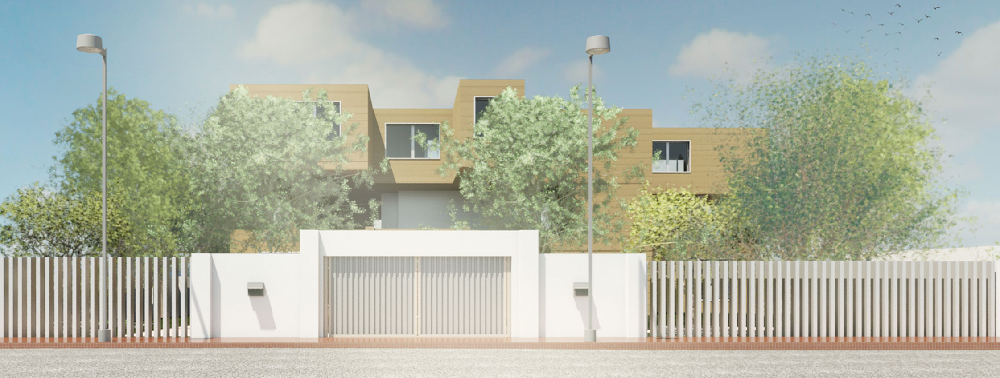
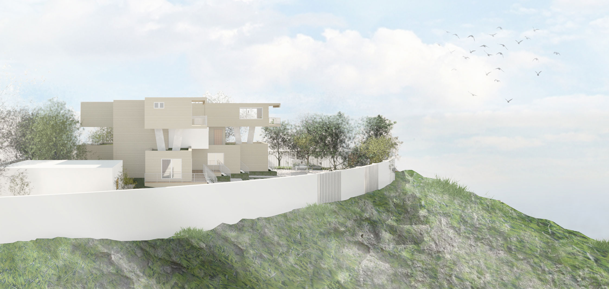
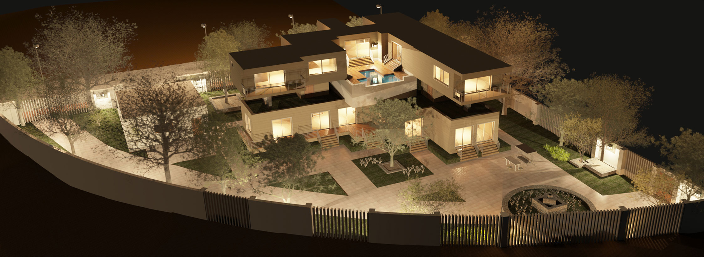
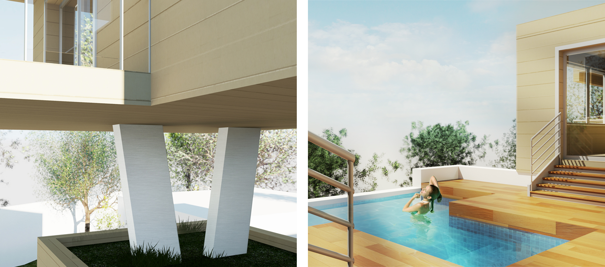

Firuz Villa
Year | Fall 2013 | 2nd Year BSc.
Type | Private Residential

The project focuses on the ability to gather knowledge and information about a specific character in order to express their personality and their traits in the design. It consists of a private villa, as well as a personal recording studio for a famous lebanese singer (Firuz) assigned on top of a steep hill in Amman. The idea was to design a house that would suite Firuz’s personality traits of; passion, freedom and mystery.
 The villa has 3 floors; starting with the Basement as the recording studio, then the Ground floor hosting the communal spaces and finally the First floor containg the bedrooms and supported by V-shaped columns.
 The Ground Floor consists of; a main hall, library, living room, dining room, guest bathroom and a kitchen. The 1st Floor has; 3 bedrooms, 3 bathrooms as well as a study and a common room.The Basement Floor has; a recording studio, a multi-purpose room with a bathroom, laundry room, storage and an electrrical room.